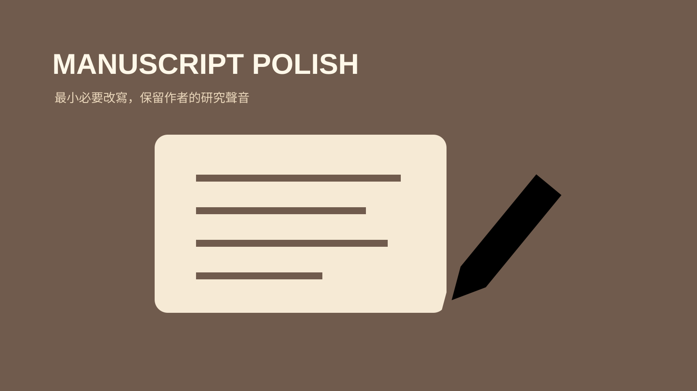

技能包 · 學術工具 · 學術研究
學術手稿全文潤飾
2026.08 · 個人專案

FIG. 19 — 產品主畫面
關於這個作品
這是一套針對單一近完成手稿的輕量潤飾流程。它聚焦於術語、時態、主張力度與段落連貫性，保留作者原本的研究聲音與 References，不補造資料、不延伸為審稿或回覆流程。
作品亮點
以最小必要改寫維持作者原有論證與聲音
校正術語、時態與主張強度的一致性
檢查段落銜接與自然學術語氣
不杜撰資料、不改造 References 或擴張工作範圍